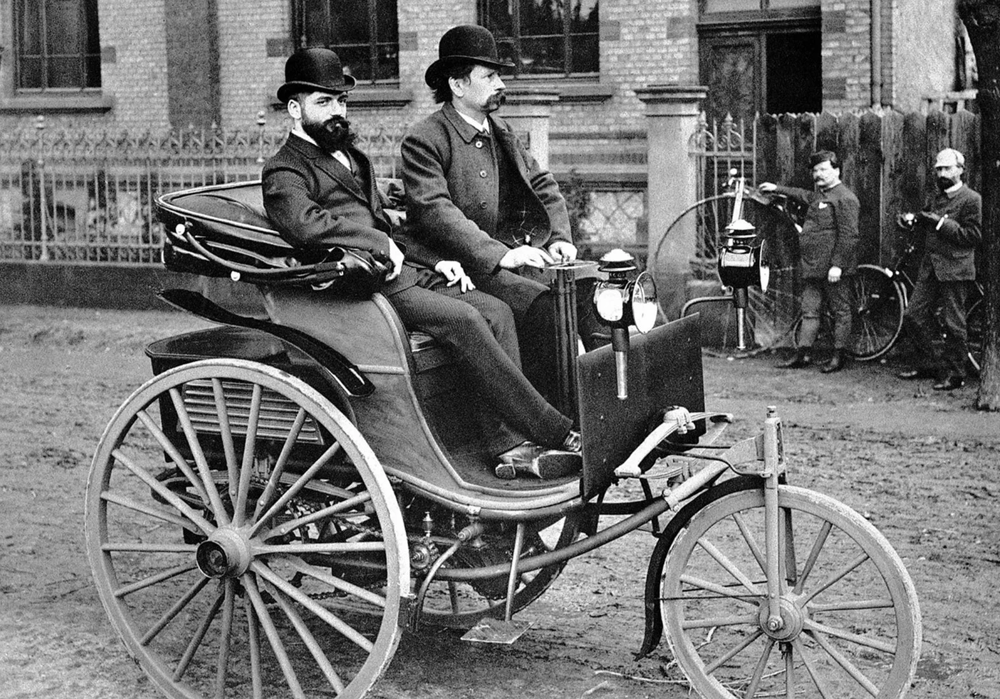
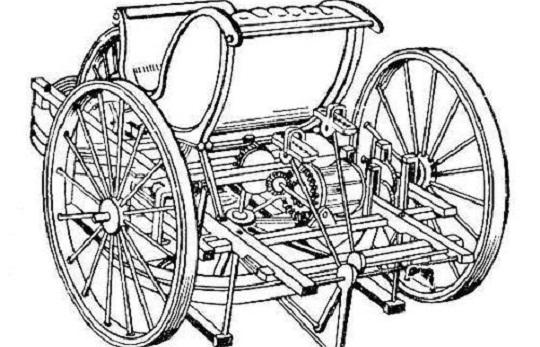

Automobile — Автомобиль
Auto Mobilis на латыни означает — подвижный, легко двигающийся. Automobile — транспортная безрельсовая машина главным образом на колесном ходу, приводимая в движение собственным двигателем (внутреннего сгорания,электрическим или паровым). Первый автомобиль с паровым двигателем построен Кюньо (Франция) в 1769-70, с двигателем внутреннего сгорания Даймлером и Бенцем (Германия) в 1885-86.
Самый оригинальный из всех автомобильных инженеров, Фредерик Уильям Ланчестер (Frederick William Lanchester) (1868–1946) отличался весьма своеобразным подходом к вопросам конструирования.
Первый «Lanchester» был изготовлен в 1895–1896 годах и не был похож ни на один автомобиль того времени. По свидетельству летописца автомобилестроения Энтони Берда, «это был первый легковой автомобиль в мире, созданный на научной основе как единое целое».
Силовой агрегат представлял собой двигатель с двумя противоположно расположенными цилиндрами и двумя вращающимися в разных направлениях коленчатыми валами, каждый из которых — с тремя шатунами. Оба вала были соединены шестернями со спиральными зубьями, поэтому отсутствовала вибрация, что обеспечивало двигателю недосягаемую по тем временам уравновешенность. Мотор включал в себя также оригинальный клапанный механизм и полностью автоматическую систему смазки. Этот удивительный двигатель работал в паре с планерной коробкой передач, что в те годы казалось высшим достижением технической мысли.
Кто и когда создал первый автомобиль?
На самом деле, как и в ситуации с большинством изобретений человечества, сложно ответить, кто именно является создателем первого автомобиля. Было много разработок, многие ученые умы изобретали что-то похожее на авто. Разработки велись параллельно. Кто-то был более предприимчивым и заявил о себе, как о изобретателе авто, а кто-то смирился с самозахватом славы.
Да и что именно называть автомобилем? Использовать современное определение? Учитывать ли самоходные аппараты на паровом двигателе, или же нужно обязательным признаком считать наличие двигателя внутреннего сгорания в устройстве?
Наверное, на эти вопросы каждый должен ответить сам. Тем не менее, стоит углубиться в истории и проследить, каким образом общество пришло к использованию автомобилей, хотя бы самых первых, массово поставленных на поток.
История создания авто
На вопрос, кто создал первый автомобиль, ответ достаточно сложный, так как было множество разработок, ученые изобретали что-то похожее на авто. При этом некоторые пытались заявить о себе, а некоторые относились к славе чрезвычайно терпимо и просто изобретали.
О каждой разновидности поговорим подробнее чуть позже. Сейчас же немного углубимся в историю создания авто и проследим, как общество пришло к использованию таких транспортных средств.
Когда-то давно Леонтий Шамшуренков создал первый самоходный аппарат, который и считается прообразом современного авто. Это устройство способно развивать скорость около 15 км/ч и было оснащено прибором, измеряющим километраж.
 Самокатная повозка Ивана КулибинаНе обошлось здесь без известного Ивана Кулибина. Он придумал трехколесную самокатку, которая ездила по городу со скоростью 16 км/ч. Здесь были даже некоторые детали, которые применяются в современном транспорте по сей день, например, тормоз или коробка передач.
Некоторые думают, что самый первый мировой авто разработал именно инженер Карл Бенц. Но стоит признать, что он действительно внес огромный вклад в продвижение этих транспортных средств.